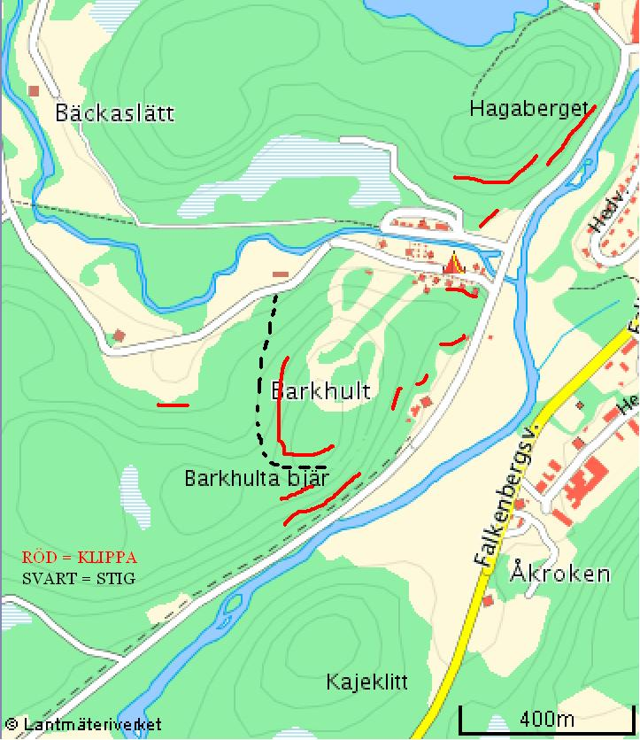

Lat: 57.129788057685275 Long: 12.708349227905273
Här finns ca 10st klippor och lite bouldring.
Vad jag vet är alla klippor här oklättrade och marken dom ligger på ägs av Falkenbergs komun eller Ge-Kås Camping så access är inget problem.
Några bilder:
Ingen av klipporna är bultad men det går att säkra mycket med topprep mot nått träd eller klättra på bult på vissa ställen.
Det finns ingen riktig förare mer än denna över klipporna men kontakta mig på nicke_dirtbike@msn.com så följer jag gärna med och guidar (ska försöka fixa någon karta att lägga upp här)
Det mesta som finns här är som sagt oklättrat, vad jag vet, så det finns mängder med nyturer och nya problem att hitta. Klipporna är också ganka rena naturligt så hittar man en ny tur behöver den inte borstas så mycket :)
Under sommaren är Campingen rätt full så det går inte att få tag i någon stuga om man inte bokat minst ett halv år före men plats för husvagn och tält finns alltid och parkering finns i anslutning till campingen (några 100m från alla klippor)
Delar av några av klipporna kan vara lite blöta om det inte har varit torka någon vecka men vissa av klipporna torkar på några timmar efter regn så det finns alltid något.
länk till camping:
min mejl om du vill ha guidning eller undrar något: nicke_dirtbike@msn.com
kartan nedan visar bara på ett ungefär var klipporna ligger, men dom syns när man närmar sig så det borde inte vara någon fara.
<googlemap lat="57.131791096754014" lon="12.719807624816894" zoom="12" type="karta"> 57.129788057685275,12.708349227905273,Ullared
</googlemap>
Kategori:Oklättrat
Kategori:Halland
Copyright (C) Permission is granted to copy, distribute and/or modify this document under the terms of the GNU Free Documentation License, Version 1.3